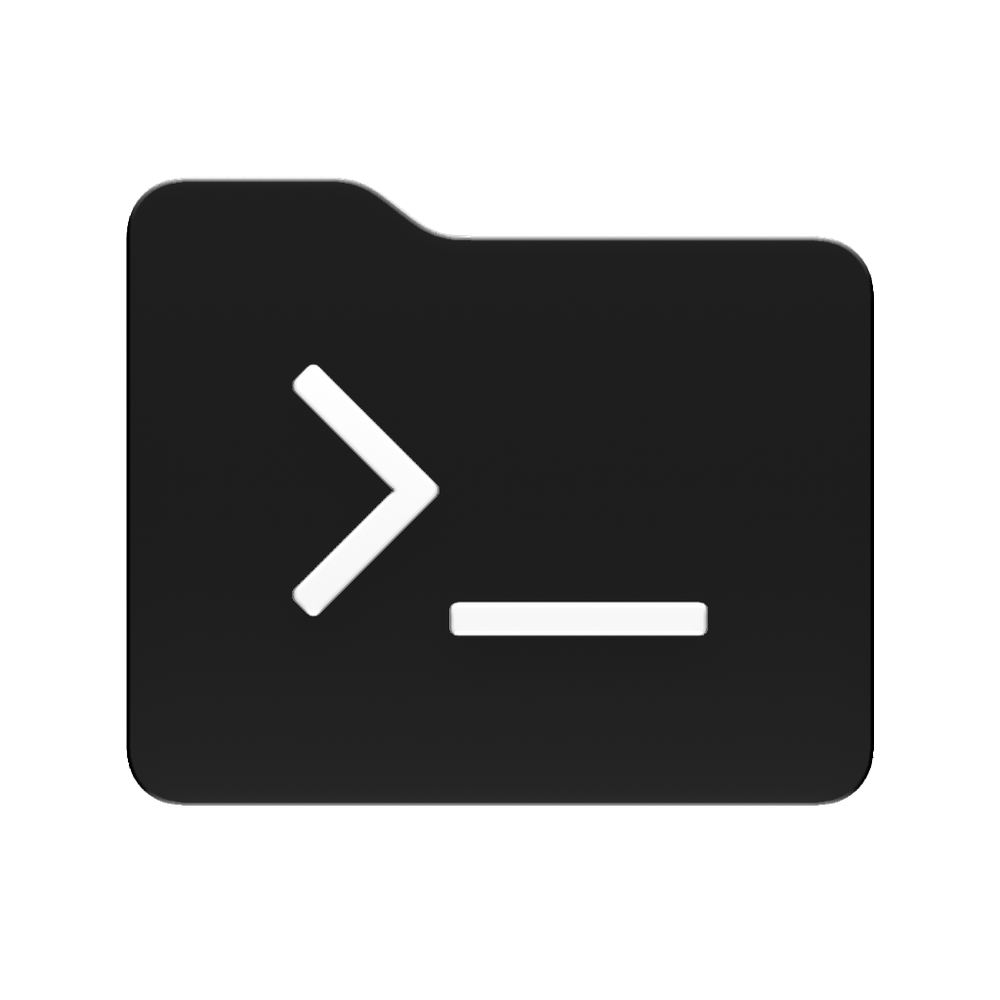
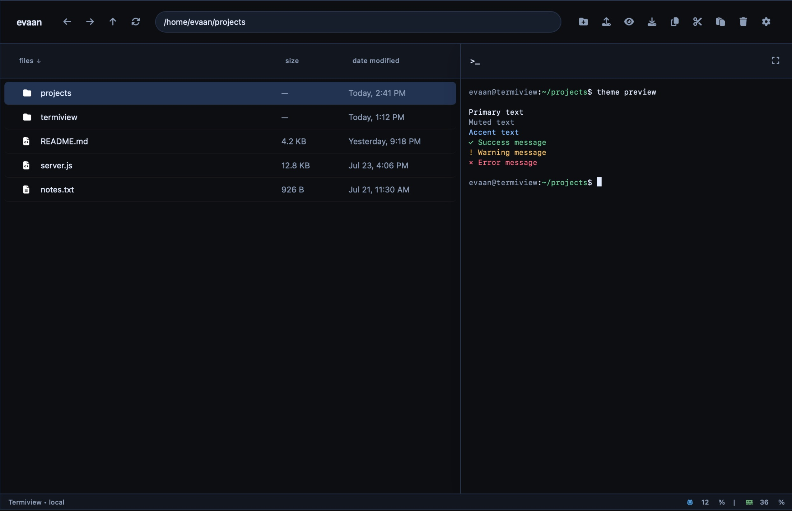

01
Server files, in reach.
Browse, preview, upload, download, and manage the home directories and volumes that matter from one familiar view.

TermiviewA focused workspace for the files, shells, and SSH servers that keep your homelab running.

Made for the machine you already use.
Spend less time hopping between terminal windows and file transfers. Keep the server work in one place.
01
Browse, preview, upload, download, and manage the home directories and volumes that matter from one familiar view.
02
Keep commands beside the files they change. Dock it where you work, resize it, or let it fill the screen.
03
Changes on disk arrive in the explorer as they happen, so your workspace keeps pace with the server.
Set it up on a homelab host or SSH server. The quick installer takes care of the platform-specific bits.
Quick install
Installs dependencies and configures Termiview to start with your server.
curl -fsSL https://raw.githubusercontent.com/matonhp5108/termiview/main/install.sh | bashDocker Compose
Downloads the Compose files and detects whether the host is macOS or Linux.
curl -o docker-compose.yml https://raw.githubusercontent.com/matonhp5108/termiview/main/docker-compose.yml
curl -o start.sh https://raw.githubusercontent.com/matonhp5108/termiview/main/start.sh
chmod +x start.sh
./start.sh -dDocker run
Linux command shown. On macOS, replace /home with
/Users.
docker run -d \
--name termiview \
-p 3000:3000 \
-v /home:/app/managed/home:rw \
-v /var/log:/app/managed/logs:ro \
--restart unless-stopped \
phantom8015/termiview:latestManual
For anyone who prefers a normal Node.js project setup.
git clone https://github.com/matonhp5108/termiview.git
cd Termiview
npm install && npm startDocker commands expose Termiview on port 3000. Manual setup requires Node.js 16+.